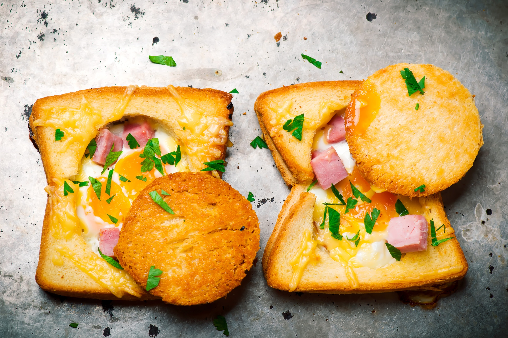

Ingrediente:
- 8 felii paine
- 4 oua
- 1 lingura patrunjel
- 2 linguri cascaval ras
- 2 felii sunca
- 2 linguri unt
- sare
- piper
Oua ochiuri cu sunca si cascaval

- Prajeste 4 felii de paine intr-o lingura de unt. In celelalte, decupeaza o gaura in centru, folosind un pahar si pastreaza miezul decupat.
- Prajeste celelalte 4 felii pe o parte si miezul lor (separat) , apoi intoarce-le si sparge cate un ou in centrul fiecareia. Scoate painea cu oul in sus.
- Pe fiecare felie de paine intreaga asaza cate una cu ou, rade putin cascaval, adauga putina sunca, sare si piper, iar deasupra presara putin patrunjel.
- Acopera ouale cu miezul de paine prajita.
Ingrediente:
- 50 g fulgi de ovaz
- 150 g iaurt grecesc
- 100 ml lapte
- o lingura seminte chia
- 2 linguri capsune
- 1 lingurite unt de arahide
- 1 lingurita miere
Fulgi de ovaz cu capsune si unt de arahide
- Intr-un recipient ce poate fi ermetizat (caserola sau un borcan), combina fulgii de ovaz cu iaurtul si laptele, semintele chia, untul de arahide si mierea. Amesteca bine, deoarece untul de arahide si mierea sunt lipicioase.
- Da borcanul/caserola la frigider peste noapte, iar dimineata serveste micul dejun sanatos cu capsune proaspete taiate deasupra.
Ingrediente:
- un pachet aluat foitaj
- 200 g sunca
- 400 g cascaval feliat
- 1/4 lingurita boia
- 2 lingurite seminte chimen
- un galbenus
- 2 linguri lapte
Croissante cu sunca si cascaval
- Aluatul de foitaj decongelat se intinde pe masa usor presarata cu faina.
- Se acopera apoi cu sunca peste care se asaza feliile de cascaval.
- Se acopera apoi cu sunca peste care se asaza feliile de cascaval.
- Se transfera in tava de copt, se ung cu galbenus amestecat cu lapte, se presara cu boia si chimen si se dau la cuptor 20 de minute.